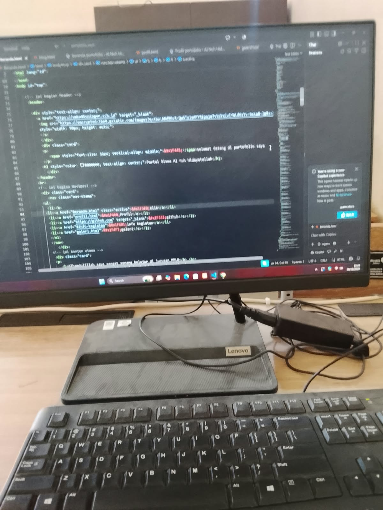

Perjalanan Hari Pertama Masuk Lab PPLG
Dipublikasikan Pada:

Awal Mula Masuk PPLG
Awal daftar itu saya memilih dua jurusan yaitu PPLG dan MPLB tapi diterimanya di PPLG kirain, Jurusan PPLG jurusan yang nyantai tapi pas kelas 11 baru kerasa betapa capenya dijurusan ini dan ngelatih kesabaran juga
Drama Kena Bug & Layar Merah
Udah paling males kalo codingan error apalagi kalo udah banyak udh cape cape kan ngetik pas di coba error , harus banyakin sabar sama siap mental aja
Pelajaran & Harapan Saya
di pelajaran coding ini yang saya dapat adalah tentang usaha dan kerja keras jika kita berusaha dengan giat dan enggak gampang nyerah pasti bisa harapan saya adalah dengan belajar seerti ini insya allah mau jadi programer